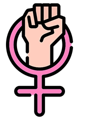

Lei Maria da Penha: Para Que Serve?
Todas as pessoas (independentemente de raça, classe social, etnia, sexo, idade, orientação sexual, religião, nível educacional, cultura ou de terem alguma deficiência) têm direito a viver sem violência e, para isso, obterem proteção do Estado.
Porém, para que todas tenham acesso a esse direito, por vezes é necessário que haja uma atenção especial do Estado. É o caso de pessoas que, devido a alguma característica (física, de idade, de raça ou etnia, sexual, entre outras), são mais vulneráveis e/ou sofrem preconceitos em nossa cultura e, por isso, tem mais dificuldades de ter acesso a direitos iguais.
Por exemplo, os idosos, crianças e adolescentes, pessoas com deficiência e... as mulheres. Por isso, devido a tudo que vimos até este ponto, foi necessária a criação de uma lei específica – a Lei Maria da Penha – para que fosse garantido o direito das mulheres à proteção contra a violência doméstica e familiar.
A Lei Maria da Penha não "favorece" as mulheres ela apenas garante que elas tenham o mesmo direito que os homens: o de não sofrerem violência doméstica e familiar.

Ou seja: a criação da Lei Maria da Penha não significa que os homens estejam desamparados pela lei, caso sofram violência doméstica. Assim como qualquer cidadão, o homem que tiver seus direitos violados pode registrar ocorrência policial na delegacia mais próxima. Pelo Código Penal Brasileiro, a pena para a mulher que agride fisicamente seu parceiro é a mesma prevista para o homem agressor (artigo 129, §9º do CPB). Caso o homem se sinta perseguido pela mulher, há a previsão de perturbação da tranqüilidade na Lei de Contravenções Penais (artigo 65). Ele também pode solicitar a medida de proibição de contato (artigo 319 do Código de Processo Penal).
Caso o homem sofra algum abuso físico ou psicológico (xingamentos, por exemplo) na delegacia de polícia ou no momento de sua prisão, deverá denunciar essa violência à ouvidoria (da Polícia Militar ou da Polícia Civil) ou ao Ministério Público.
Porém, vale a pena lembrar: quando se trata de violência entre casais ou ex-casais, a maior parte das agressões é cometida por parte do homem contra a mulher – devido à cultura machista em que vivemos.
Histórico da Lei
A Lei Maria da Penha foi criada para responder a um problema observado ao longo da história da humanidade, na maior parte das civilizações: a violência sofrida por mulheres. Os estudos na área apontam dados preocupantes, indicando que a maior parte dos assassinatos de mulheres (feminicídios) e de outras violências que elas sofrem ocorre nessas condições: em um ambiente onde deveriam se sentir mais protegidas (a própria casa), e cometidos por parte de quem menos esperam (maridos, namorados, parceiros, filhos e ex-parceiros).

No Brasil, cerca de 80% dos casos de agressão contra mulheres foram cometidos por parceiros ou ex parceiros.
Ou seja: percebemos que a violência contra as mulheres ocorre em nossa cultura porque elas se encontram em condições menos vantajosas em relação aos homens, especialmente no ambiente doméstico.
O Brasil é o 5º país do mundo em número de assassinatos de mulheres.

Diante disso, nas últimas décadas muitas mulheres lutaram para mudar essa realidade e ter direitos (inclusive o direito à vida) iguais aos dos homens. Surgiram os movimentos feministas que denunciaram milhares de atrocidades sofridas por mulheres todos os dias, em diversos ambientes, na maioria dos países. Os órgãos internacionais de defesa dos direitos humanos passaram também a defender o direito das mulheres a viver sem violência. Enfim, essa luta em vários lugares do mundo fez com que os governos percebessem a gravidade do problema e passassem a ter leis de proteção às mulheres.

Entre 1980 e 2013, ocorreram no Brasil mais de 100.000 assassinatos de mulheres.
E as estatísticas indicam que esse número aumenta a cada ano — mesmo após a criação da Lei Maria da Penha.
Assim, a Lei Maria da Penha é o resultado da luta de milhares de mulheres que foram vítimas da violência. Foi elaborada após a cobrança da Organização dos Estados Americanos – OEA (o órgão internacional responsável por denunciar a violação de acordos internacionais), para que o governo do Brasil tomasse providências no sentido de proteger as mulheres de seu país contra esse tipo de violência – infelizmente tão comum em nossa cultura.
A Lei nº 11.340, conhecida como "Lei Maria da Penha", foi sancionada pelo Presidente da República em 2006. A lei brasileira que protege as mulheres contra a violência recebeu o nome de Maria da Penha em homenagem à farmacêutica cearense Maria da Penha Maia Fernandes. Vítima de diversas violências graves por parte do marido, ela quase foi morta e sofreu seqüelas graves (como a perda do movimento das pernas). Maria da Penha lutou para proteger a própria vida e para mostrar à sociedade a importância de se proteger as mulheres da violência sofrida no ambiente mais inesperado, seu próprio lar, e advinda da pessoa de quem menos se espera: seu companheiro, marido ou namorado.

A Lei Maria da Penha é considerada uma das legislações de proteção à mulher mais avançadas do mundo. Dentre os vários avanços que ela traz estão:
-
A criação de Juizados especializados no assunto, o que deve garantir uma melhor compreensão de servidores da Justiça e de juízas e juízes sobre o problema, além fazer com que o processo judicial seja mais rápido
-
As medidas protetivas de urgência
-
A mulher só pode solicitar o arquivamento do processo judicial perante a juíza ou juiz, o que garante que ela seja ouvida com maior cuidado. Isso também pode evitar que o processo seja arquivado devido à mulher sofrer ameaças, chantagens ou intimidações
-
A compreensão do problema a partir da questão de gênero
Quando a Lei fala sobre gênero, a maioria das pessoas já pensa que isso significa negar as diferenças entre homens e mulheres. Mas não é assim! Ninguém discute que essas diferenças existem, como por exemplo a gravidez, a amamentação e os órgãos sexuais. O que a Lei e os estudos na área mostram é que não se pode justificar outras diferenças como, por exemplo, o acesso a salários iguais, a distribuição de tarefas na casa e com os filhos, como se comportar, o que vestir, como expressar seus sentimentos, entre outras coisas. Essas diferenças foram construídas na cultura, não são naturais! E acabam justificando muitas injustiças e violências cometidas contra as mulheres, que ficam assim colocadas em uma posição inferior e de subordinação em relação aos homens.
A Constituição Federal Brasileira garante:

"Art. 5° Todos são iguais perante a lei, sem distinção
de qualquer natureza, garantindo-se aos
brasileiros e aos estrangeiros residentes no País a
inviolabilidade do direito à vida, à liberdade,
à igualdade, à segurança e à propriedade, nos termos
seguintes:
I – homens e mulheres são iguais em direitos e
obrigações, nos termos desta Constituição;"